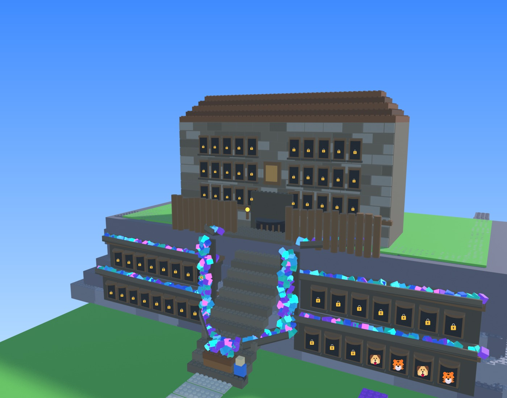
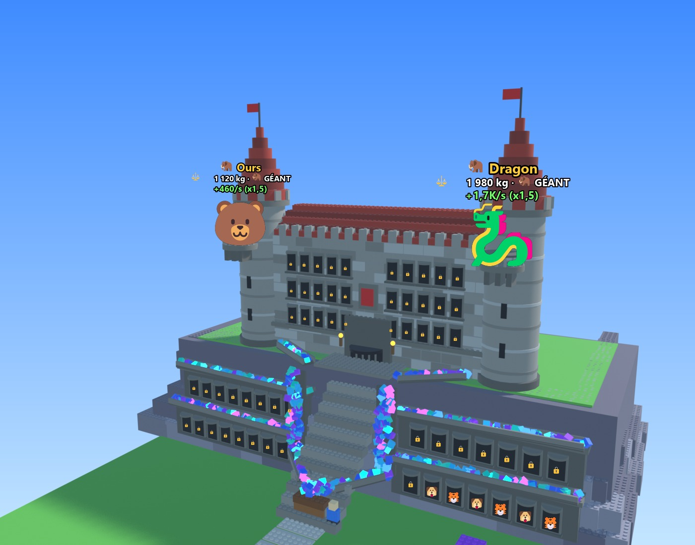
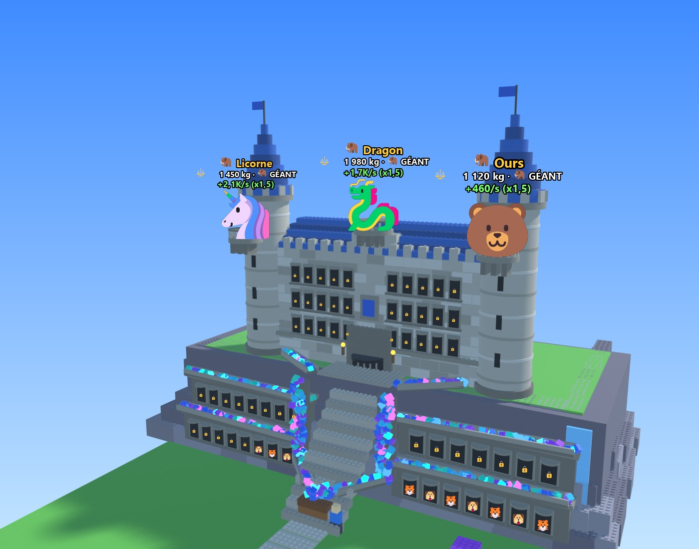
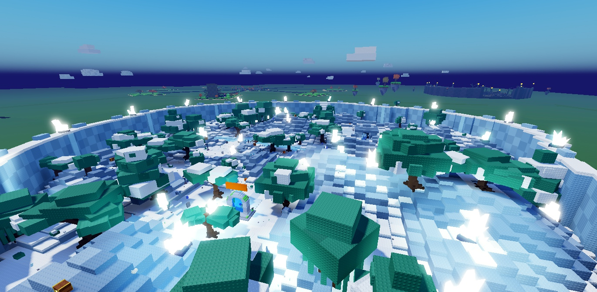
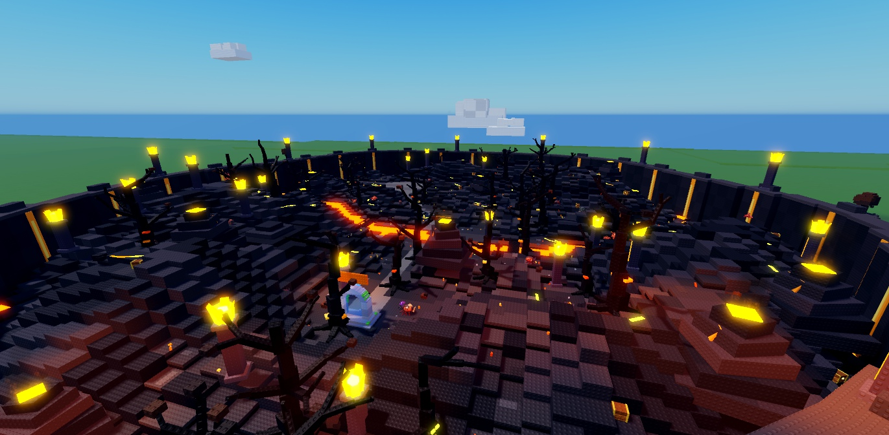
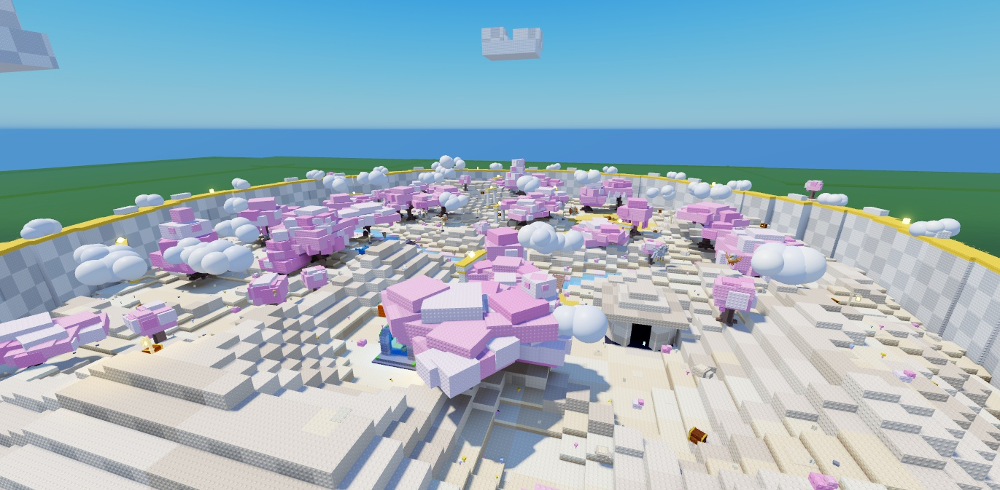

📘 Dossier technique du projet
Projet Roblox · mis à jour le 18/10/2026 à 04:12 (dernier commit 9d57e70) · tout ce qui a été choisi depuis le 16/10 : ce qui est dans le jeu, ce qui est validé mais pas encore codé, et ce qu'il reste à décider.
💠 Boucle de jeu et économie ✅ Dans le jeu
La boucle : tu tires le levier, tu achètes l'œuf d'une espèce sur un socle, tes créatures travaillent dans les vitrines du château, la cascade remplit le coffre d'éclats de mana 💠, tu améliores la machine et tu renais pour gagner des places. 601075e · 75fb3cd · be03e98
Monnaie
- La monnaie s'appelle « Éclats de mana » 💠 dans tous les textes (avant : « Gemmes »). La ressource Cristal prend l'icône 💎. be03e98
- 500 💠 au départ : le premier œuf s'achète dès le tutoriel. Coffre de départ : 5 000 💠.
Renaissances (×4 à chaque fois)
50K → 200K → 800K → 3,2M → …
- Gardé : la taille du coffre et les emplacements. Remis à zéro : les éclats et les panneaux Puissance, Vitesse et Chance.
- Chaque renaissance donne +2 places dans le château (4 au départ).
Robux
- Robot mineur : uniquement en gamepass, affiché 149 R$.
- Packs d'éclats : le montant prévu, ou plusieurs minutes de ta production si c'est plus (la Poignée à 25 R$ : 1 000 💠 ou 15 min de production).
⏳ Avant de publier crée le gamepass sur Roblox et colle son ID à la place de Id = 0 dans TycoonConfig.GamePasses.
| Œuf (prix en 💠) | Machine à œufs | Place centrale |
|---|---|---|
| Basique / Commun | inchangé | 600 |
| Rare | 3 000 | 3 000 |
| Épique | 12 000 | 18 000 |
| Légendaire | 50 000 | 60 000 |
| Mythique | 220 000 | — |
| Divin | 1 000 000 | — |
| Céleste | 4 500 000 | — |
| Citrouille (Halloween) | — | 3 500 |
🖥️ Interface et récompenses ✅ Dans le jeu
Disposition de l'écran 75fb3cd · 21d06ac · 9061d7d
- En haut : « Mon île » et « Place », qui téléportent directement, avec la pastille jour/nuit et météo à côté.
- À gauche : Index, Boutique, Rebirth, Mon château, en gros, sans cadre. À droite : les autres menus en plus petit.
- En bas à gauche : la chance au-dessus du compteur d'éclats de mana.
- Icônes des packs Simulator Icon Pack et Flibpook à la place des emojis (menus, voyage, Quotidien, Cadeau, compteur). 21d06ac
- Tous les textes parlent du château au lieu de la tour. 9061d7d
Récompenses gratuites
- Quotidien : 7 jours, de 500 💠 au jour 1 jusqu'à « Œuf Épique + 10 000 💠 » au jour 7. Si tu rates un jour, la série repart au jour 1.
- Cadeau : toutes les 15 min de jeu, il vaut 5 min de production (minimum 300 💠).
🐉 Créatures
Poids, taille et géants ✅ Dans le jeu abd2a91
- Un individu pèse de ×0,1 à ×3,3 le poids typique de son espèce : un Dragon va de 60 kg à 1 980 kg.
- Environ 2 % sont des GÉANTS 🦣 : badge et message à tout le serveur.
- Taille de ×0,7 à ×2, gains de ×0,8 à ×2. La fusion garde le poids de la plus lourde des 5.
Annonce Divin+ et garantie ✅ Dans le jeu aaa9dc0
- Créature Divine ou mieux : bannière chez tout le serveur pendant 5 s, avec la créature en 3D.
- Après 49 œufs sans Légendaire+, le suivant en est un. Compteur au-dessus du levier.
Les monstres des zones deviennent des espèces ✅ Dans le jeu 8ac61b9
- Les 34 monstres des zones deviennent des espèces obtenables : on passe à 88 espèces.
- Leur rareté dépend de leur zone, et ils gardent le modèle 3D du monstre.
- En battant un monstre, environ 1 chance sur 200 de gagner sa créature.
12 nouvelles créatures (100 espèces) ✅ Dans le jeu 9d57e70
- Grenouille, Loutre, Pingouin, Sphinx Doré, Méduse Astrale, Cerf des Étoiles, Renard Aurore, Poulpe Nébuleuse, Lapin Lunaire, Golem Météore, Kraken du Vide, et le Dragon du Néant (Secret).
- Apparence provisoire en mini-voxels : elles seront refaites avec toutes les créatures (étape 2).
Les 9 boss en rareté « Boss » ✅ Dans le jeu 9d57e70
- Les 6 boss des zones et les 3 d'Halloween deviennent des créatures d'une rareté à part, juste sous Secret, toujours géantes, avec leur catégorie « 👑 Boss » dans la Collection.
- Leur œuf ne sort qu'à la roulette, et seulement après 3 victoires contre ce boss (la progression s'affiche au-dessus du levier). Un boss précis sort environ 5 fois moins souvent qu'une espèce Céleste précise ; prix 12 M 💠.
Refonte : vrais squelettes, une seule peau ✅ Dans le jeu 262c6fa
- Chaque créature devient une seule peau (un MeshPart) avec de vrais os : dos, cou, tête, queue(s) en 3 segments, pattes ou bras à 3 os, ailes à 3 os. La peau se plie aux articulations : plus de trou à l'épaule ni de pièces qui flottent.
- Chaîne automatique sur la machine : export depuis Studio, peau fondue et texture reportée dans Blender, squelette calculé, fichier 3D, puis import automatique dans Studio (souris pilotée, bandeau rouge et notification Noctu).
- Les 5 chevaux ailés partagent la peau et le squelette du Pégase ; seule la peinture change.
- En jeu :
CreatureSkinsconstruit la peau à partir deCreatureRigsData(identifiant du mesh, texture, os) ;CreatureBonesanime les os (marche en diagonale, vol, tête, queues, respiration), branché dansCreatureMotionet dans les vitrines. - Décision du 20/10 : les créatures ailées sont toujours en vol. À l'arrêt, elles font du sur-place en battant des ailes ; dans les vitrines, sur les balcons et dans l'Index, elles volent sur place (pattes repliées, léger flottement). Plus d'ailes repliées. Seul le Poussin reste au sol.
- Vol naturel (
CreatureBones, tableFLIGHT) : 4 façons de voler (oiseaux, dragons et chauves-souris, insectes et papillon, anges), rythme selon la taille, battement souple avec l'aile à moitié repliée en remontant, aile qui ondule, corps porté par chaque coup d'aile, tête stable, queue en contrepoids, planés. - Les 109 créatures sont importées et testées en jeu (galerie :
docs/croquis/squelettes.html), en attente de ta validation créature par créature.
Détails de surface (poils, écailles, plumes, roche) 🛠️ essai sur 4 créatures
- Chaque créature reçoit une carte de relief et une carte de brillance, calculées dans Blender (
tools/mesh-gen/rig/detail_bake.py) et posées sur la peau (CreatureSurfaces/<clé>, interrupteurCreatureSkins.UseDetails). - Poils (Loup), écailles (Dragon), roche et cristal (Golem de Cristal) validés le 19/10. Plumes refaites (Phénix) : plumes en rangées qui se chevauchent, avec un tuyau central ; en attente de ton avis (
docs/croquis/details-surface.html). - Ensuite : chaque créature reçoit sa matière, et les créatures mixtes en ont plusieurs.
🥚 Refonte des œufs
L'ordre que tu as choisi : 1. les monstres deviennent des espèces, 12 nouvelles créatures et les boss (fait) → 2. refonte de toutes les créatures → 3. un œuf par espèce dans le style « Prisme » → 4. éclosion dès l'achat.
Éclosion dès l'achat 🛠️ Validé, à coder
- L'œuf commence à éclore dès qu'on l'achète, sans limite, et la créature naît toute seule avec une petite notification.
- Plus d'incubateurs ni d'animation d'éclosion : le menu et les 4 incubateurs de la place disparaissent, ceux achetés sont remboursés.
- Le bouton ⚡ « éclore maintenant » reste.
Un œuf par espèce, style Prisme 🛠️ Après la refonte
- Tu as adoré l'œuf du Prisme Suprême : cristal à facettes, fissures lumineuses. C'est ce style qui sera décliné pour chaque espèce.
- Les œufs « à l'image de l'animal » des autres essais ne t'ont pas plu.
Une aura par rareté ⏳ À valider bf32181 · 4c67489
- 10 raretés, de Commun à Secret, chacune avec son aura : anneau, étincelles, rayons, feu, étoiles, fumée galactique…
- L'aura noire est réservée au Secret. Les auras lointaines sont coupées sur téléphone.
🏰 Le château « Mélange » ✅ Dans le jeu
La falaise avec son escalier, ses galeries de vitrines et la cascade, sous le château de conte de fées, élargi pour remplir tout le dessus du rocher : façade sur toute la largeur avec un pavillon central, ailes sur les côtés et au fond autour d'une cour intérieure, grand donjon carré, tourelles, flèche à l'arrière et île flottante au-dessus du donjon. e003333 · a8af4f7 · 4c496f1
Composition
- 60 vitrines : 30 dans deux galeries de la falaise, juste au-dessus du coffre (les premières places débloquées), et 30 dans le château.
- 4 places au départ, +2 par renaissance. Chaque vitrine montre la créature en 3D, son poids et son gain.
- Rosace en vitrail au-dessus de la porte, porte arrière vers le parc.
- 6 places à géants au maximum (gain ×1,5) : 0 / 2 / 3 / 4 / 5 / 6 selon le palier.
- Reconstruction animée au changement de palier (21/10, croquis
chateau-reconstruction.html, option A) : l'ancien château s'effondre (ses pièces basculent vers l'extérieur, rebondissent sur la falaise et s'effacent, 1,6 s ; il ne s'enfonce plus, demande du 21/10), le nouveau tombe du ciel pierre par pierre, du bas vers le haut, puis étincelles, sans musique (≈ 5,5 s en tout). Joué sur l'écran de chaque joueur proche (CastleRebuildClient) ; pour le jeu, le nouveau château marche tout de suite. La falaise (attributSocle) ne bouge pas.
Cascade d'éclats de mana
- Les éclats glissent dans des rigoles au-dessus des vitrines, tombent de chaque côté de l'escalier et finissent dans le coffre par une glissière.
- Vide sans travailleur, de plus en plus fournie, pleine à 12 travailleurs. a8af4f7
- C'est seulement visuel : le coffre se remplit comme avant.
| Palier | Renaissances | Couleurs | Géants | Ce qui apparaît |
|---|---|---|---|---|
| 1. Fortin de bois | 0 | 0 | La falaise et ses galeries, l'escalier, la cascade, un petit château brun derrière une palissade de rondins. | |
| 2. Château fort | 1 | 2 | 2 tours collées au château avec un balcon chacune, des créneaux et des drapeaux rouges. | |
| 3. Château de pierre | 3 | 3 | Les tours grandissent, balcon du milieu sur le toit, cascade d'eau le long de la falaise, toits bleus. | |
| 4. Château royal | 5 | 4 | 2 tours extérieures reliées par un rempart à la place du balcon du milieu, rosace, bandeaux dorés. | |
| 5. Palais d'or | 10 | 5 | La grande flèche arrive avec son balcon, 2 tours fines, des cristaux sur les toits. | |
| 6. Citadelle céleste | 20 | 6 | L'île flottante au-dessus du donjon : nuages, halo, quatre cristaux et un grand balcon pour le 6ᵉ géant. Tout devient blanc et cyan. |





Rendus du château Mélange par palier, avant son élargissement à toute la largeur du rocher (voir le croquis chateau-large.html pour la version finale).
🏝️ L'île en U ✅ Dans le jeu
En arrivant par le pont, on tombe sur le château en premier. Le château est devant, côté place, un jardin étroit longe chacun de ses côtés, et le grand parc derrière grandit vers la mer. L'île reste carrée. 9df7f37 · 6c9e5bf
Chiffres
- Îles à 341 studs du centre (559 avant).
- Pont fixe d'environ 124 studs, qui ne change jamais.
- Allées : 5 colonnes de chaque côté. Parc : 32×4, 34×10, 36×16, 38×22, puis 40×27 au maximum.
- Autant de cases qu'avant à chaque niveau. Les décorations déjà posées sont rangées dans la nouvelle grille ou remboursées.
Pour que ce soit beau
- Cour d'honneur face à la façade : on arrive face au château, avec le coffre et la cascade au centre.
- Deux allées-jardins symétriques avec haie et lanternes.
- Grand parc où se promènent tes créatures, avec un belvédère sur la mer au fond.
Où va chaque élément
- Machine à œufs à gauche de la cour, tableaux d'amélioration à droite.
- Fusion et autel aux deux coins du parc, de chaque côté de la porte arrière.
- Dans la cour arrière : portail de parcelle, portail retour, panneau de stats, comptoir d'œufs.
🌍 Le monde
Place centrale ronde ✅ Dans le jeu
- L'arène est supprimée, la place est au centre, et on y apparaît. 1428085
- Disque de pierre de 260 studs de diamètre, avec des garde-fous et des lampadaires. c9905d2
- 6 portails de zone en anneau à 86 studs du centre, chacun tourné vers sa zone.
⏳ À fournir tes captures de référence pour le décor final de la place.
Ponts en étoile ✅ Dans le jeu
- Un pont par île, de la place à la cour d'honneur, avec une arche au nom du joueur sur la place.
- Au style du château, selon le palier : planches, bois sur piles, pierre à arches, pierre blanche et or, palais d'or, céleste sur nuages. Les îles libres ont un pont de pierre neutre. 142249f
- Plaques de vitesse tous les 45 studs : ×3 pendant 4 s, dans les deux sens, seulement sur le pont et la place. 0575119
⚔️ Les 6 zones et leurs boss ✅ Dans le jeu
f6d193c · 85d7bdd · cd40fa5 · c7e4701
| Zone | Pour entrer | Boss | Difficulté | Ressource · décor |
|---|---|---|---|---|
| 🌼 Prairie | libre | 🎃 Roi Citrouille (Halloween) | Facile · PV ×1 | — |
| 💎 Grotte | une Rare | 👻 Dragon Spectral | Moyen · PV ×1,8 | dégâts ×1,25, éclats ×1,6 |
| ❄️ Glaces (nouvelle) | une Épique | ❄️ Yéti Géant | Difficile · PV ×3 | ❄️ Givre · neige, sapins, pics de glace, flocons |
| 🌙 Bois des Ombres | une Légendaire | 💀 Liche Ancienne | Très difficile · PV ×4,5 | — |
| 🌋 Volcan (nouvelle) | une Mythique | 🌋 Dragon de Lave | Extrême · PV ×6,5 | 🔥 Magma · basalte, rivière de lave en néon |
| ☁️ Céleste (nouvelle) | une Divine | 🦅 Griffon Doré | Légendaire · PV ×9 | ☁️ Nuage doré · sol crème doré, arches dorées |
Déroulement d'un boss
- Les 6 boss dorment en même temps pendant 10 min dans la clairière de leur zone, puis disparaissent 20 min.
- Le bouton « ⚔️ Réveiller le boss » ouvre le panneau de groupe : seul ou avec 2 joueurs (amis en premier ⭐).
- Au lancement, le boss se réveille en 6 temps. Chaque groupe a son boss : les autres le voient toujours endormi.
- Butin selon la participation, une victoire par boss et par passage. Pendant un orage, éclats des boss ×1,5.
Combats de boss refaits ✅ Dans le jeu 93e0a8c · bd30baa · ea19aa5 · ee60d29
- Animations : chacun des 9 boss a ses propres attaques et sa mort, animées à la main dans Blender et publiées comme vraies animations Roblox.
- Projectiles : ils partent de la main, de la gueule ou du bâton au moment du geste, avec un aspect, une trajectoire et un son propres à chaque boss (comète de givre, boule de feu, orbe maudit, plume dorée...).
- Effets magiques : cercles d'alerte lumineux qui se remplissent jusqu'à l'impact, éclats d'étoiles, ondes de choc, fissures lumineuses, cristaux, geysers de lave, mort en lumière.
- Entrée en combat (21/10,
BossArenaClient) : cinématique de 4,2 s (bandes noires, caméra qui glisse vers le boss, nom au rugissement, retour derrière le joueur, un clic la passe) ; un mur sort du sol autour de la clairière et bloque jusqu'à la fin (sur l'écran des joueurs du combat seulement) ; bouton « Abandonner » pour sortir. 1re attaque à 5 s. Décors à thème des murs : croquisboss-murs.html, en attente d'avis. - Marche et vol animés dans Blender (21/10,
poses/_locomotion.py) : boucle « Walk » (Géant, Golem, Roi Citrouille, Yéti ; la Liche glisse) jouée quand le boss avance, à la cadence de ses pas (BossLocomotion), boucle « Fly » en continu pour les 4 boss ailés ; arrêtées pendant les attaques, le réveil et la mort. Vidéo :boss-deplacements.html.
21 nouveaux modèles 3D
- Boss : Yéti Géant, Dragon de Lave, Griffon Doré.
- Glaces : wyverne de givre, golem de glace, ours polaire, loup des neiges, hibou des neiges, gelée de givre.
- Volcan : dragonnet de lave, golem de magma, oiseau de feu, salamandre de feu, scarabée de lave, gelée de magma.
- Céleste : griffon céleste, baleine des nuages, gardien céleste, pégase des nuages, aigle doré, fée céleste.
Tous ces monstres sont maintenant aussi des espèces à collectionner.





🌗 Ambiance : jour, nuit, météo et sons ✅ Dans le jeu
Cycle jour / nuit 19b1922 · d79936c
- 12 minutes, le même pour tout le serveur : jour 7 min 30, coucher 30 s, nuit 3 min 30, lever 30 s.
- La nuit : Chance de la machine +0,25 (ajoutée, pas multipliée).
- Ciel cartoon à nuages en bandes le jour, nuit étoilée la nuit. Une pastille indique l'heure et la météo.
Météo aléatoire (tirée à chaque cycle)
| Météo | Chance | Effet |
|---|---|---|
| ☀️ Clair | 55 % | — |
| 🌧️ Pluie | 18 % | puis 1 min d'arc-en-ciel : 5 % des naissances en variante Arc-en-ciel |
| 🌫️ Brouillard | 12 % | ambiance seulement |
| ⛈️ Orage (nuit) | 8 % | éclats des boss ×1,5 |
| 🌠 Étoiles (nuit) | 7 % | étoiles à ramasser = 6 s de production (min 20 💠) |
Sons 150394e · c931411 · 8d4c4b7 · 53cdd17 · e9ac01f · 4a9bea6
- Gardés : clics, menus, notifications, machine à œufs, éclosion, plaques de vitesse, combats, rugissement des boss, pluie et tonnerre, carillon des étoiles.
- Retirés à ta demande : la musique de jour et de nuit, la téléportation, l'ambiance oiseaux / grillons, la clochette de succès. Les notifications sont silencieuses pendant les 10 premières secondes de partie.
🎬 Animations ✅ Dans le jeu
Boss plus vivants f4b35cf
- Ressorts en chaîne du bassin jusqu'aux poings, buste qui se plie, tête qui regarde le joueur proche, respiration.
- Réveil en 6 temps : sursaut, appui sur les bras, accroupi, redressement, rugissement, garde. Le dragon décolle.
Créatures fluides 01ad744 → 653a7e8
- Moteur commun
CreatureMotion: virages, vrais pas, rebond, tête, queue, ailes, sauts élastiques. - Mobs lissés sans saccades, familiers qui suivent en douceur, créatures de l'île qui se couchent pour dormir, vitrines et Index vivants.
- Sur téléphone : animation complète de près, simplifiée de loin.
🗺️ Feuille de route
| Ordre | Chantier | État | Détail |
|---|---|---|---|
| 1 | Refonte de toutes les créatures | 🛠️ en cours | Style D choisi ; vrais squelettes pour les 109 (262c6fa). Restent : choix Dragon Ancien, Golem et Lion, cornes des licornes ailées. |
| 2 | Un œuf par espèce, style Prisme + auras | 🛠️ après la refonte | Auras par rareté encore à valider. |
| 3 | Éclosion dès l'achat | 🛠️ validé | Plus d'incubateurs, remboursement de ceux achetés. |
| 4 | Décor de la place | ⏳ tes captures | La forme ronde est faite. |
| 5 | Relecture visuelle en jeu | ⏳ à faire ensemble | Les captures Studio sortent noires : île en U, château, ponts, nuit et sons n'ont été vérifiés que par mesures. |
| 6 | Gamepass Robot mineur | ⏳ avant publication | Créer le gamepass, coller l'ID dans TycoonConfig.GamePasses. |
Déjà dans le jeu (du plus ancien au plus récent)
- Esplanade, machine en grand arc, panneaux de biais, picots sur tous les sols. 3414829 → 9122c92
- Interface, quotidien, cadeau ; prix, renaissances, robot en gamepass. 75fb3cd · 601075e
- Annonce Divin+, garantie ; poids et géants. aaa9dc0 · abd2a91
- Boss plus vivants ; carte avec place au centre et ponts en étoile ; boss endormis ; plaques de vitesse. f4b35cf · 1428085 · cd40fa5 · 0575119
- Monde à 6 zones et 21 modèles ; créatures fluides. f6d193c · 85d7bdd · c7e4701 · 01ad744 → 653a7e8
- Place ronde ; île en U et placements. c9905d2 · 9df7f37 · 6c9e5bf
- Château Mélange, cascade selon les travailleurs, château plein ; textes « château » ; ponts au style du château. e003333 · a8af4f7 · 4c496f1 · 9061d7d · 142249f
- Jour / nuit et météo, sons, monnaie « Éclats de mana », icônes, ciels. 19b1922 · 150394e · be03e98 · 21d06ac · d79936c
- Les 34 monstres des zones deviennent des espèces (88). 8ac61b9
- 12 nouvelles créatures (100 espèces) et les 9 boss en rareté « Boss ». 9d57e70
- Toutes les créatures à vrai squelette, une seule peau. 262c6fa
🚫 Ce qui a été écarté à ne pas refaire
- Façade seule, tour au milieu, géant au-dessus de la porte, tours détachées : remplacés par le château Mélange plein.
- Château trop plat : élargi à toute la largeur du rocher.
- Cascade qui coule sans travailleur : corrigé.
- Boss en blocs pour les croquis : les vrais boss sont plus réalistes.
- Musique (les deux morceaux), son de téléportation, oiseaux / grillons, clochette : retirés. Peu de sons, et demander avant d'en ajouter.
- Pontons entre îles voisines et tapis roulant : ponts en étoile et plaques espacées.
- Île ronde, jardins larges à gauche et à droite, éventail, jardin vers la place : remplacés par l'île en U.
- Nuit ×1,25 : trop fort en fin de partie, remplacé par +0,25.
- Œufs à l'image de l'animal : seul le style Prisme est gardé.
- Le nom « Gemmes » : la monnaie s'appelle « Éclats de mana » 💠.
⚙️ Où se règle quoi
20/10 : grand ménage. Place Studio allégée de 2 924 pièces (anciens essais de génération), doublons d'éclairage retirés, Rojo reconnecté (synchronisation automatique de src/), 3,2 Go de fichiers inutiles supprimés, code mort retiré, feu du Phénix réparé en jeu, anciens croquis rangés dans docs/croquis/archive/.
21/10 : ancien système de créatures en morceaux retiré (il ne reste que les peaux à squelette). Performance : PerfTouch coupe les contacts (CanTouch) de ~43 000 pièces de décor ; gardent leurs contacts les passages des portails, les gemmes, les plaques de vitesse, les étoiles filantes, et toute pièce marquée de l'attribut KeepTouch (collecteur et Encaissement des îlots).
| Sujet | Fichier | Réglage |
|---|---|---|
| Monnaie, gamepasses | Configurations/TycoonConfig.luau | Currency, GamePasses |
| Annonce Divin+, garantie | Configurations/EggConfig.luau | seuil et durée d'affichage |
| Poids et géants | Configurations/WeightConfig.luau | plages de poids, taille, gains |
| Château et paliers | Configurations/CastleConfig.luau · Modules/CastleBuilder.luau | paliers, places à géants |
| Machine, panneaux | Configurations/EggRollConfig.luau | BoardsFace, BossUnlockWins, chances et prix des Boss |
| Monstres devenus créatures, boss en créatures | Configurations/TycoonConfig.luau | MobSpecies, MobOwnDropChance, BossSpeciesStats, BossCreatureHeight |
| Picots, jour / nuit, météo, ponts | Configurations/WorldConfig.luau | Art.StudFloorMin, DayNight, RandomWeather, IslandBridges |
| Sons | Configurations/SoundConfig.luau | identifiants, volumes, QuietAfterJoin |
| Icônes | UITheme | IconImages / MakeIcon |
| Quotidien, cadeau | Configurations/RewardConfig.luau | récompenses des 7 jours |
| Disposition des îles | Modules/MapLayout.luau | GetIslandRingRadius() |
| Boss des zones | Modules/ZoneBosses.luau · Configurations/BossConfig.luau | cycle 10 / 20 min, difficultés |
| Mouvements des créatures | Modules/CreatureMotion.luau | ressorts, pas, ailes |
| Créatures à squelette | Configurations/CreatureRigsData.luau (généré) · Modules/CreatureSkins.luau · Modules/CreatureBones.luau | angles des pattes, repli des ailes ; chaîne de fabrication dans tools/mesh-gen/rig/ |
Les chemins partent de src/ReplicatedStorage/, sauf CastleBuilder qui est dans src/ServerScriptService/Modules/. Le code part dans Studio par Rojo (port 34872).